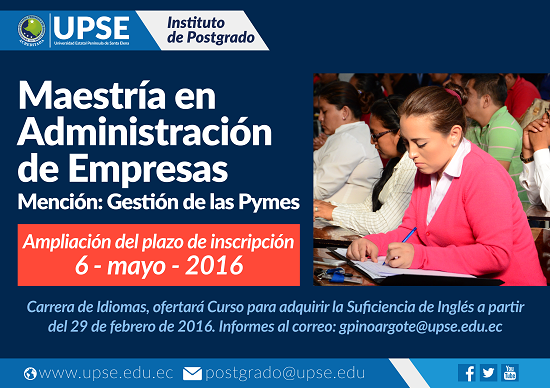

-
Inicio del Primer Cuso de Actualización 2016
Se inicio el sabado 5 de marzo del 2016 el primer proceso de actualizacion especial del periodo vacacional 2016.
Las materias a dictarse son Programacion Web, Redes,Diseño de trabajo de Titulación, Soluciones Tecnológicas, Competencias Generales
-
VI Aniversario de la Facultad de Sistemas y Telecomunicaciones

En días pasados la Facultad de Sistemas y Telecomunicaciones de la UPSE, celebró su Sexto Aniversario de Creación. Sus autoridades, docentes y estudiantes se congratularon en cumplir otro año más de labor, sirviendo a la colectividad de nuestra provincia.
En la actualidad, su planta docente está conformada por 32 profesionales que imparten cátedras a 443 estudiantes, en las dos carreras que oferta; Informática y Electrónica y Telecomunicaciones, iniciaron sus festividades con una mañana deportiva, donde hombres y mujeres disfrutaron de las divertidas actividades que se desarrollaron
-
Rectora de la UPSE rindió cuentas a la comunidad Universitaria y Peninsular
El 26 de febrero del 2016,en el auditorio Ciudad La Libertad, de la UPSE, la ing. Lilia Cruzaty, Rectora de la prestigiosa institución, realizó su informe de Renición de Cuentas correspondiente al 2015, en cumplimineto de la Constitución de la Republica del Ecuador.
-
Se efectuó la carrera 5K C&A UPSE
La carrera se llevo a cabo el dia 4 de Marzoen las instalaciones del autodromo Teófilo Bucaram Saadi, a las 16h00, tuvo buena acogida.
Se premiaron los 3 primeros lugares de las 2 categorias Hombres y Mujeres.
-
Proceso de Inscripción para Maestria se extendió
El Consejo de Estudios de Posgrados de la Universidad Estatal Peninsula de Santa Elena presidida por el Vicerrector Academico de la UPSE, en sesión ordinaria, resolcio reformar el calendario de la Maestria en Administración de Empresas. Mención Gestión de PYMES.
Las inscripciones se darán hasta el 6 de Mayo del 2016 atraves del link http://upse.edu.ec/index.php/noticias/607
-
Concluyó Proyecto de Vinculación en Ayangue

El 4 de marzo del 2016, en la comuna Ayangue del cantón Santa Elena, se realizó el acto de clausura del proyecto de Vinculación con la Colectividad, desarrollado por docentes y estudiantes de la carrera de Administración de Empresas de la UPSE, producto de un convenio suscrito entre la UPSE y la Comuna Ayangue.
El evento concluyó con la entrega de reconocimientos y presentes a los directivos y docentes de la Universidad. Además, se entregó los respectivos certificados a los participantes, que aspiran mejorar la calidad de los diversos servicios que ofrecen para bien de los turistas que acuden a este importante balneario del Ecuador.
-
UPSE fortaleciendo vínculos con la comunidad
Mediante la firma de una carta de compromiso, la Universidad Estatal Península de Santa Elena, acordó patrocinar al grupo scout “Mi espacio” de nuestra provincia, el evento se llevó a efecto el 05 de marzo del presente año, en el salón de Postgrado de esta casa de estudios.
Este acuerdo fue coordinado por el departamento de Vinculación con la Colectividad, suscrito por el rector encargado de la UPSE, Ing. Jimmy Candell Soto y el Ing. Miguel Valencia, comisionado distrital del grupo Scout de Santa Elena.
UPSE, fortaleciendo sus vínculos con la comunidad y los diversos organismos de la región, con el fin de consolidad su misión de compromiso social y ambiental.
-
Sesión de Inducción sobre examen Complexivo

El Vicerrectorado Académico, realizará el 04 de marzo del presente año, una sesión de inducción sobre el Examen de Fin de Carrera, dando cumplimiento al cronograma aprobado para la recepción de examen complexivo.
La convocatoria está dirigida a estudiantes que culminaron su plan de estudios antes del 21 de noviembre del 2008, y que cumplieron con los requisitos legales para su habilitación: malla curricular, pasantías y cursos de inglés e informática.
Además asistirán los estudiantes que se presentaron a un primer examen y se acogieron a una segunda oportunidad la sesión se desarrollará en la sala de Postgrado, a las 17h30, donde se analizará detalladamente sobre el tema, de acuerdo a la disposición transitoria del Consejo de Educación Superior, (CES).
{kind=link}
{kind=link}
{kind=link}
{kind=link}
{kind=link}